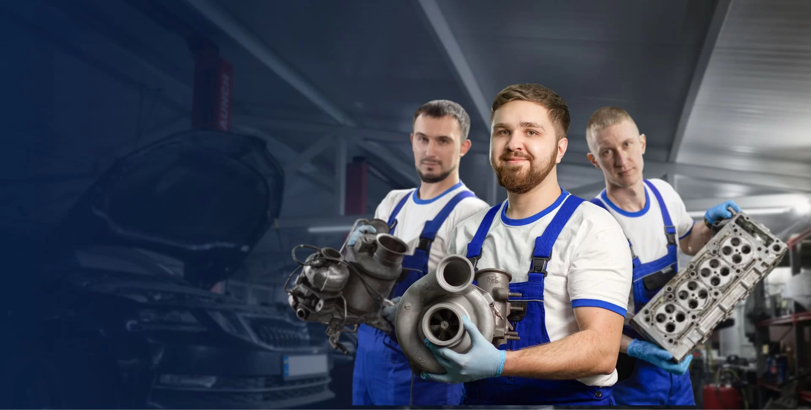

AutoPro — спеціалізований автосервіс у Києві
Наш автосервіс — це сучасний центр технічного обслуговування автомобілів, який працює понад 10 років. Ми спеціалізуємося на комплексній діагностиці, профілактиці та ремонті легкових автомобілів усіх марок. Наша команда — це кваліфіковані майстри з багаторічним досвідом, які використовують сучасне діагностичне обладнання та сертифіковані інструменти. Ми гарантуємо високу якість робіт, чесні ціни та індивідуальний підхід до кожного клієнта. Ваша безпека на дорозі — наш головний пріоритет.
Як ми працюємо
Спочатку оглядаємо автомобіль та визначаємо причину несправності. Пояснюємо обсяг робіт і погоджуємо кошторис до початку ремонту. Після обслуговування перевіряємо результат та надаємо рекомендації.
Перед візитом підготуйте марку, модель, рік випуску та короткий опис проблеми.
Послуги
Знайдіть потрібну послугу за назвою або описом та оберіть напрям обслуговування.
Обрано послуг: 0. Вибір діє до перезавантаження сторінки.
Ціни
- Комп'ютерна діагностика двигуна від 500 грн
- Заміна моторного мастила та фільтра від 300 грн
- Діагностика ходової частини безкоштовно за умови ремонту у нас 350 грн
- Заміна гальмівних колодок (одна вісь) від 600 грн
- Регулювання розвалу-сходження (1 вісь) від 650 грн
- Шиномонтаж (комплект 4 коліс з балансуванням) від 1200 грн
- Нормо-час робіт майстра 600 грн/год